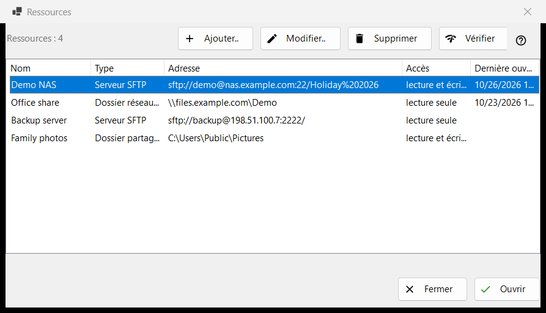
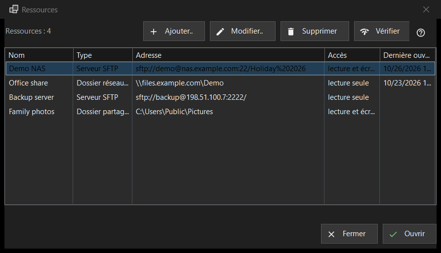

Ressources
Objectif
La liste des serveurs et des dossiers réseau que le programme peut ouvrir : serveurs SFTP, dossiers réseau Windows (SMB) et dossiers que Share Manager partage depuis cet ordinateur. Elle s'ouvre depuis «Gérer les ressources..» dans le menu des dossiers ; la même liste se trouve sur la page «Serveur et ressources» de la fenêtre des paramètres.


Dans cet ordre
- Appuyez sur «Ajouter..» et renseignez le serveur, ou apportez un fichier de paramètres avec le bouton «Plus».
- Sélectionnez la nouvelle ligne et appuyez sur «Vérifier».
- Appuyez sur «Ouvrir» ou double-cliquez sur la ligne : le programme se connecte et affiche le dossier du serveur.
- Utilisez «Modifier..» pour changer une adresse ou un mot de passe et «Supprimer» pour oublier une ressource.
Les éléments
La liste
Colonnes : Nom, Type, Adresse, Accès et Dernière ouverture. Le type est «Serveur SFTP», «Dossier réseau (SMB)» ou «Dossier partagé (Share Manager)» ; l'accès indique «Lecture seule» ou «Lecture et écriture». Une ligne sous la liste compte les ressources et, s'il n'y en a aucune, la fenêtre affiche une indication et un bouton «Ajouter..». Modifier, Supprimer et Vérifier (et Ouvrir dans la rangée du bas de la fenêtre Ressources) demandent une ligne sélectionnée ; tant qu'il n'y en a pas, leur info-bulle indique «Sélectionnez d'abord une ressource dans la liste».
Ajouter.. et Modifier..
«Ajouter..» ouvre le formulaire d'une nouvelle ressource et «Modifier..» celui de la ressource sélectionnée. Un mot de passe saisi là est enregistré chiffré pour votre compte Windows, jamais dans la liste elle-même.
Supprimer
«Supprimer» demande d'abord confirmation, et la réponse par défaut est Non. La question nomme la ressource et précise que le mot de passe enregistré pour elle disparaît aussi, tandis que les fichiers sur le serveur ne sont pas touchés.
Vérifier
«Vérifier» teste la ligne sélectionnée sans l'ouvrir. Pour un serveur SFTP, il essaie toutes les adresses connues de la ressource et signale chacune sous la forme hôte:port avec un verdict : une réponse SSH vivante fait de la vérification un succès, un port ouvert qui n'est pas SSH est un avertissement, le silence est un échec. Aucun mot de passe n'est envoyé. Pour un dossier réseau, il ouvre le partage avec le mot de passe enregistré et lit son dossier racine ; si aucun mot de passe n'est enregistré, il vous demande d'en saisir un avec «Modifier..». Pour une ligne Share Manager, il regarde seulement si le dossier existe sur cet ordinateur.
Ouvrir
«Ouvrir», ou un double-clic sur une ligne, confie la ressource au programme, qui se connecte et affiche son dossier. Si aucun mot de passe n'est enregistré, ou si celui qui l'est est refusé, une petite fenêtre le demande d'abord.